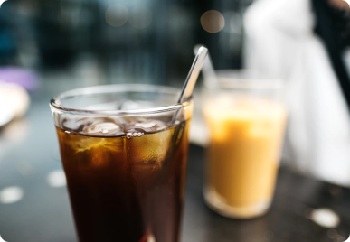

Все статьи
Выбрать тему
Путешествие в Берлин в августе
Летний месяц я провела в столице Германии вместе с друзьями. И вот как это было!

Где выпить колдбрю в Москве
Собрала для вас список любимых кофеен, где подают лучший летний напиток.

Прочитано: книжные рекомендации
Рассказываю о прочитанных за последнее время книгах: фавориты и провалы.
Снимки на плёнку
Поделилась с вами весенними фотографиями, и секретами удачных снимков.
Домашний чизкейк
Что может быть лучше чизкейка с сезонными ягодами? Только домашний чизкейк!